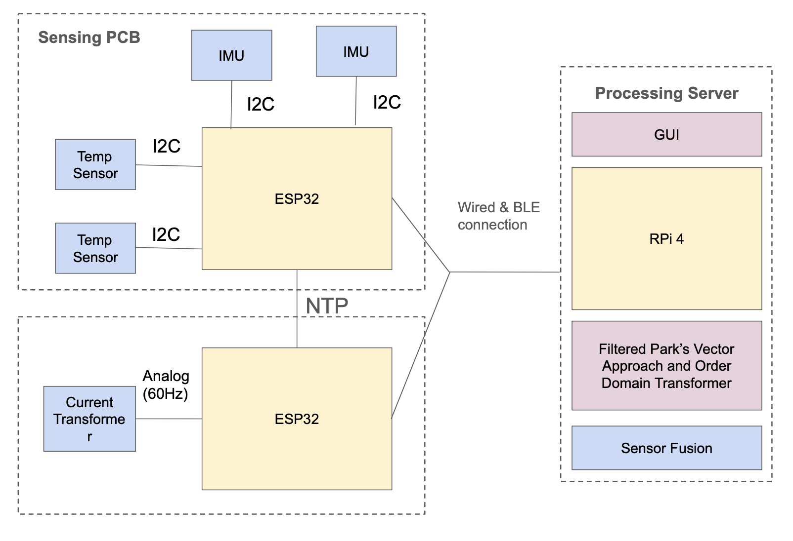
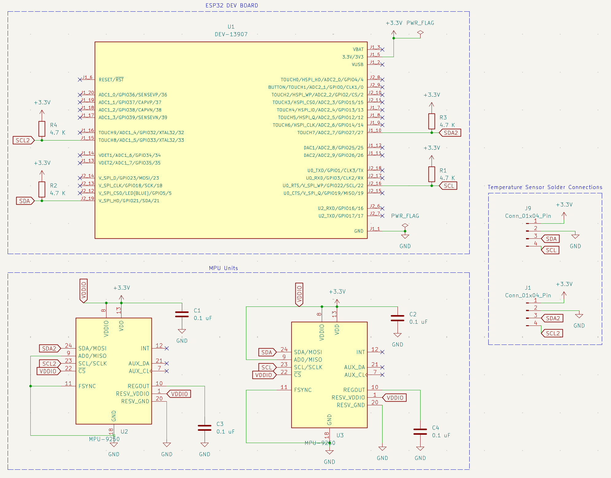
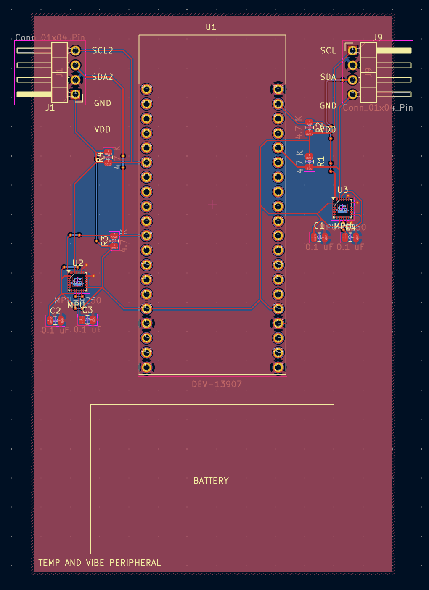
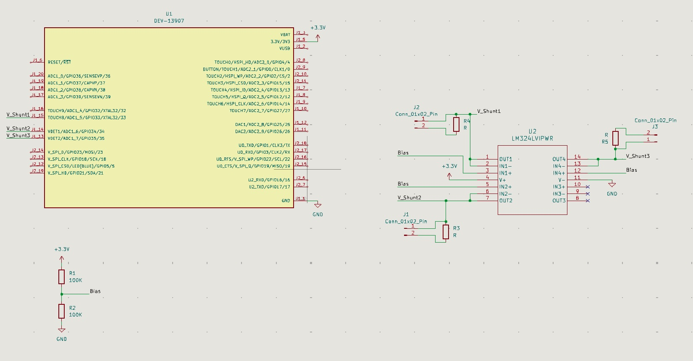
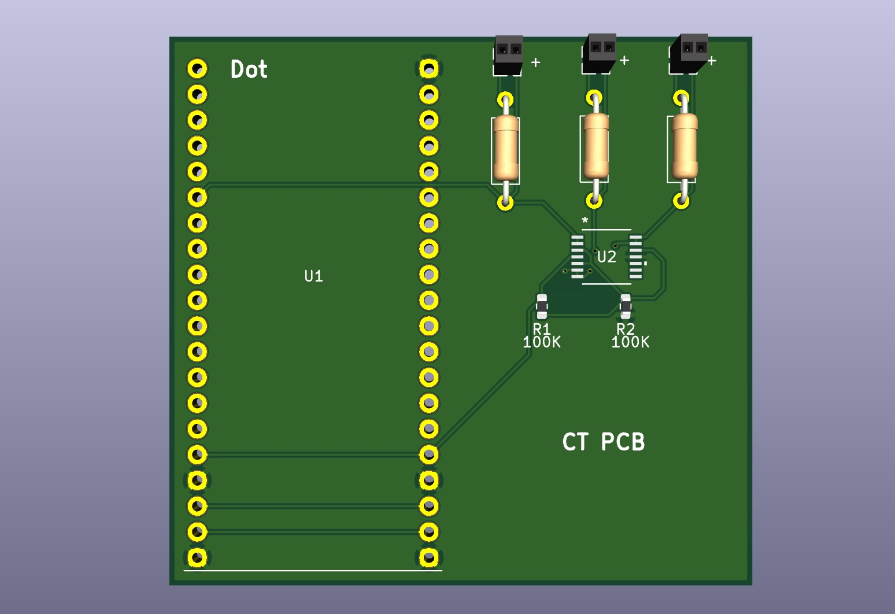
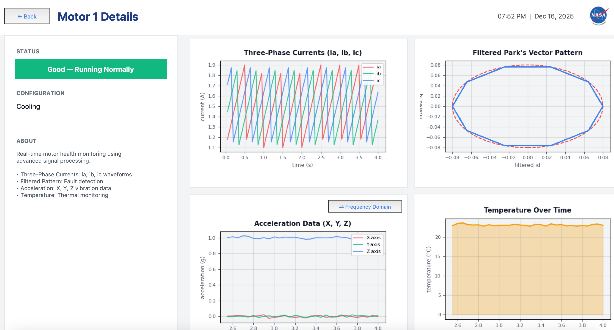
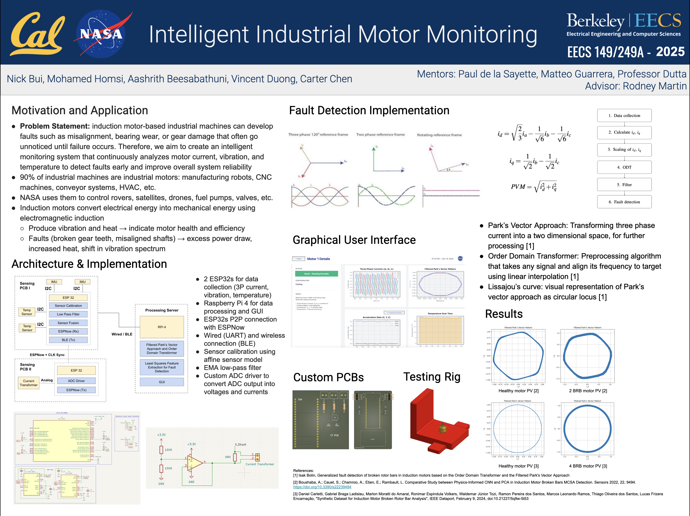
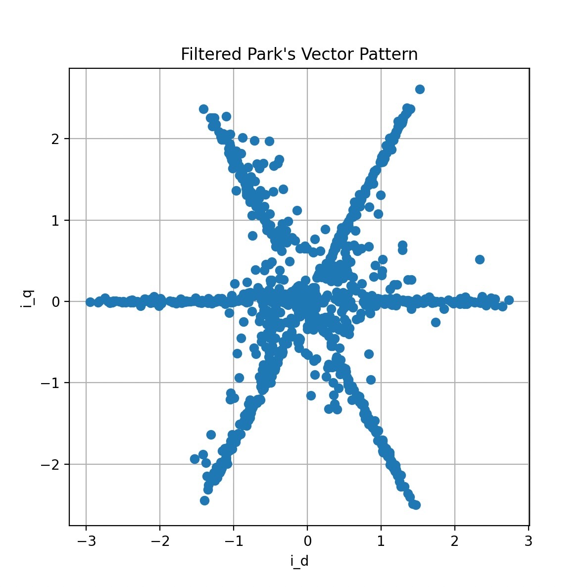
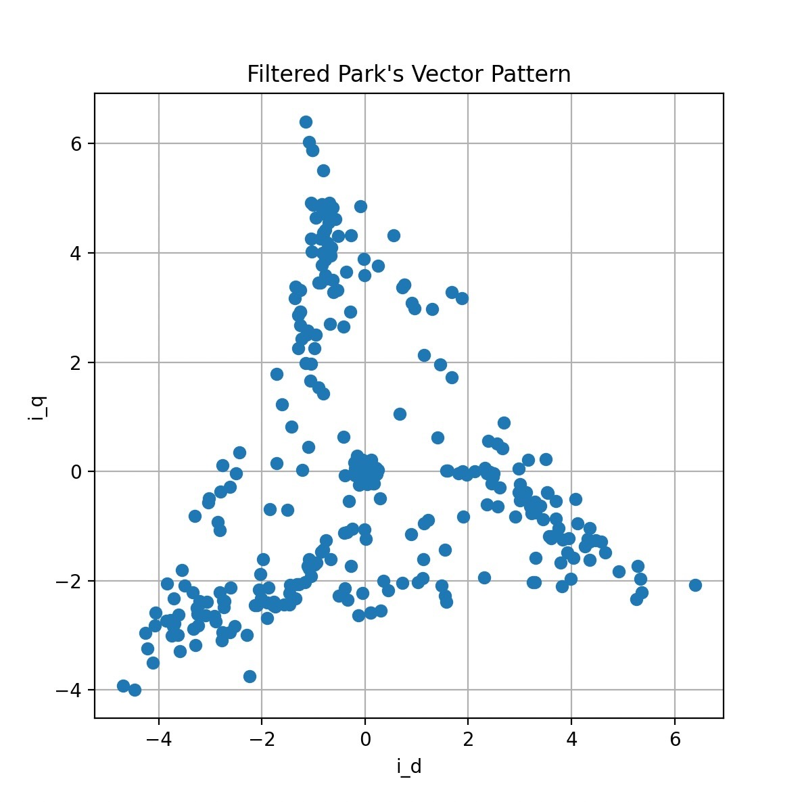

NASA Machine Monitoring
'Cyber-Physical Embedded Systems' Final Project
Project Overview
Our project aims to build an intelligent industrial machine-monitoring system for NASA that measures vibration, current draw, and temperature from electric motors and detects early-stage faults. The system combines a custom PCB with accelerometers, thermistors, current transformers, ADCs, and an ESP32; a Raspberry Pi that performs higher-level processing and visualization; and real-time fault-detection algorithms including the filtered Park’s vector approach and order-domain transformer. The final deliverable is a fully integrated hardware–software platform that collects synchronized sensor data, processes it, and displays diagnostic outputs through a GUI.
Design Approach
1. PCB + Embedded Hardware
We design a mixed-signal PCB that interfaces with accelerometers, temperature sensors, and current transformers. The ESP32 handles sampling, light preprocessing, timestamping, and wired/wireless transmission to the Raspberry Pi. Key considerations include ESD protection, analog front-end noise reduction, proper CT biasing, and ensuring synchronous sampling across sensors.
2. Data Processing + Fault Detection (Raspberry Pi)
All raw sensor streams are fused and processed on the Raspberry Pi. We apply Kalman filtering, LPF/BPF, Filtered Park’s Vector Approach, Order-domain transform, and Marzullo’s algorithm. The Pi serves as the main computation node and provides an API to the GUI.
3. GUI + Visualization
A lightweight dashboard visualizes vibration, current, temperature, derived metrics, and algorithm outputs in real time. The design is modular for alternate motors and sensing configs.

PCB Schematics
There were 2 main PCBs in this project: Temperature + Vibration PCB and AC Current Transformer PCB. Both PCBs communicated through NTP, and had options for wireless and wired communication back to the main Raspberry Pi.
- Temp + Vibe Board This board is attached to the motor, and measures the temperature and vibration of the motor. Communicating through 2 separate I2C lines, the temperature sensors (SHT30s) would output a digital value, which is locally processed on the ESP32. We utilized a 4 pin connector, to be able to adjust the positioning and placement of our temperature sensors. On this board also contains the IMU (MPU 9250) with the corresponding circuit to measure the vibrations of the motor. 2 sensors were used on the same board for redundancy, and 2 I2C lines were used to not overload the line with the high frequency of data.


- Current Transformer Board This is the second ESP32 board, attached to the base of the motor. By utilizing a clip-on current transformer (CR3110-3000) we would be able to measure the current seen through the wires, thus detecting any anomalies during motor operation. By converting the current measured from the output of the sensor with the turns ratio, we are able to process the real current seen through the wire. Due to the importance of having measurements from this board synced with that of the other ESP32 peripheral's data, we ensure their clocks are synced through an NTP protocol between the boards.


GUI + Live Visualization
The GUI consumed real-time sensor data over two redundant links: a Bluetooth channel for quick setup and a wired serial link for lab demos and noisy environments. The Python dashboard ingested both streams, synchronized packets, and rendered live vibration, current, and temperature plots alongside fault flags so we could see issues as they emerged.

Milestone 1 Check-In
Status Summary
Attached is our Milestone 1 summary, consisting of initial meetings with key contacts (EE149 professor and NASA AMES contact),
along with initial system design and real CT characterization.
Outcome
With our final presentaiton, we were able to present our work to the proffesors and class, showcasing a live demo of our GUI being able showcase fault detection on our motor, utilizing sensor fusion of the 3 inputs we recieved from the motor. By adding an offset mass for one example, and adding a diode along one of the wires of our 3 phase motor, we were able to showcase our implementation correctly identifiying when we would see problms with the motors health. Attatched is the final research paper, along with the poster we created for our project.

Final Report
Media Gallery

Healthy motor

Motor with error (diode)